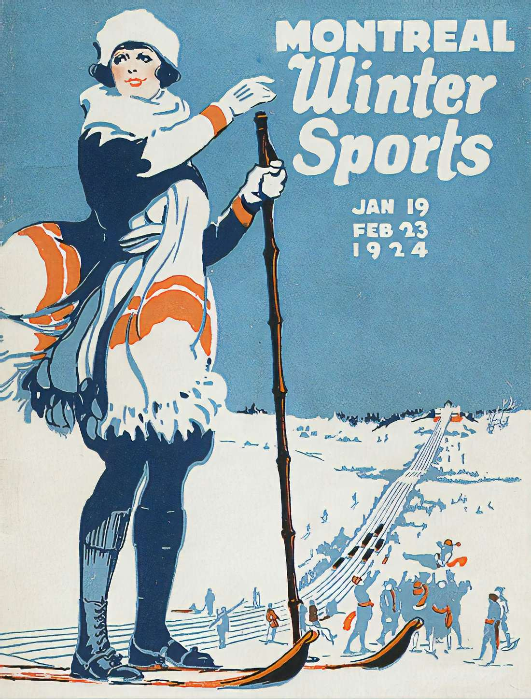

选一句，读一句。Read a sentence in place.
选中一段文字，按下 ⌥ Option + W，浮窗就会显示原文和译文。没选中文字时，同一个快捷键可以用来框选屏幕。Select a passage and press ⌥ Option + W to see the translation. With nothing selected, the same shortcut lets you capture part of the screen.
Mac 菜单栏翻译工具Menu-bar translator for Mac
选中文字，按下 ⌥ W 看译文。遇到图片，先按快捷键，再框住想读的那一段。Select text and press Option + W to translate it. For words in an image, press the shortcut first, then drag to capture them.
v0.4.10 macOS 14+ Apple silicon & Intel
登录可用每日免费额度，也可自备 API 或使用本地 Ollama。Sign in for a free daily allowance, or use your own API key or a local Ollama model.

选中一段文字，按下 ⌥ Option + W，浮窗就会显示原文和译文。没选中文字时，同一个快捷键可以用来框选屏幕。Select a passage and press ⌥ Option + W to see the translation. With nothing selected, the same shortcut lets you capture part of the screen.
框选一张表，译文会保留行列、空格子和部分合并单元格。宽表可以横向滚动，识别有误时也可以改完原文再译。Capture a table to keep its rows, columns, empty cells and some merged cells. Scroll wide tables sideways or correct the source and translate again.
翻译后，浮窗会找出文中的名字和缩写。点开名词解释，就能对照原句查看它们的含义。After translation, open the term notes to look up names and abbreviations while the original passage stays in view.
识别错了一个字，点原文改好，再点「重新翻译」。译文也能直接编辑。Click the source to correct a word, then translate again. You can edit the translation directly, too.
框住要读的几行字。检测到可靠的倾斜角度时，TranslateHUD 会在本机校正框内的截图，再显示识别结果。角度不确定时，沿用原截图。Drag a box around the lines you want to read. When TranslateHUD can determine the angle, it straightens that captured region on your Mac. Otherwise it uses the original capture.
只框住二维码时，原文区留空，识别结果显示在译文区。你可以打开链接，或点底栏复制。二维码内容在本机识别。Capture just a QR code and its contents appear in the translation area, with the source left blank. Open the link or copy the result from the toolbar. Recognition happens on your Mac.
适用于 macOS 14 及以上版本。Requires macOS 14 or later.
v0.4.10 · 构建 20 · 已公证v0.4.10 · Build 20 · Notarized
下载 TranslateHUD-0.4.10.dmg，打开文件，把 TranslateHUD 拖进「应用程序」即可。 Download TranslateHUD-0.4.10.dmg, open the file, and drag TranslateHUD into Applications. That’s it.
用来读取其他应用里选中的文字。打开「系统设置 → 隐私与安全性 → 辅助功能」，允许 TranslateHUD。没有它，选区翻译不能用，快捷键也会提示你去打开。 This lets TranslateHUD read selected text in other apps. Open System Settings → Privacy & Security → Accessibility, and allow TranslateHUD. Without it, selection translation cannot run, and the shortcut asks you to turn it on.

在「系统设置 → 隐私与安全性 → 录屏与系统录音」中允许 TranslateHUD 截取你框选的区域。授权后如果仍无法截图，退出并重新打开 TranslateHUD。 In System Settings → Privacy & Security → Screen & System Audio Recording, allow TranslateHUD to capture the area you select. If you still can’t take a screenshot, quit and reopen TranslateHUD.
截图翻译时，Mac 在本机识别文字，再把文字交给你使用的翻译服务。整张截图留在本机。隐私声明 Your Mac reads the text and sends it to your chosen translation service. The screenshot itself stays on your Mac. Privacy statement

在设置里用手机或邮箱验证码登录，即可使用每日免费额度。符合条件的中国大陆手机号新用户还可输入邀请码 translatehud-200 领取 ¥2 体验额度。 In Settings, sign in with a code sent to your phone or email for a free daily allowance. Eligible new users with a mainland China phone number can also redeem translatehud-200 for ¥2 in trial credit.
如果已有 API Key，在设置中选择 DeepSeek、OpenAI 等兼容服务并填入密钥。也可以连接 Mac 上运行的 Ollama 模型。 If you have an API key, choose DeepSeek, OpenAI, or another OpenAI-compatible service in Settings and enter your key. You can also connect to an Ollama model running on your Mac.